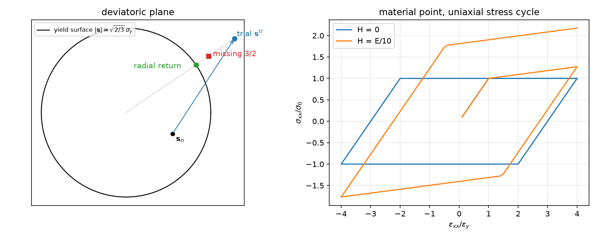
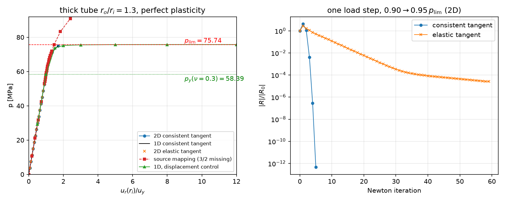
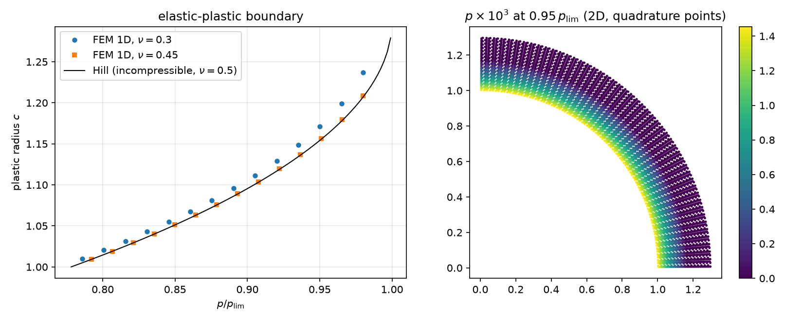

AI-based Materials and Process Simulation II
Week 04 — J2 Plasticity: Return Mapping, Quadrature Spaces, the Consistent Tangent, Limit Loads
Process Systems Laboratory
Department of Chemical and Biomolecular Engineering, SeoulTech
Today
| Part | Topic | Time |
|---|---|---|
| Quiz on Week 3 (closed-AI) | 10 min | |
| A | Theory — J2 plasticity, backward Euler, radial return, the consistent tangent, the thick tube (first yield, limit load) | 55 min |
| B | Plasticity in code — quadrature spaces, the update in NumPy, an explicit Newton loop, displacement control | 45 min |
| C | Verification — material-point tests, elastic and first-yield checks, Newton rates, limit load, a 1D reference | 40 min |
| D | LLM pitfalls · assignment | 20 min |
Lab notebook: W04_lab.ipynb · Assignment: W04_HW4.ipynb (due before Week 5)
Week 3 in one slide
- One 3D law, three 2D reductions by the choice of \varepsilon_{zz}; GPS adds one number e_0, eliminated by static condensation (two solves, one LU).
- Thermal stress -\beta\Delta T\,\mathbf I; harmonic \Delta T is stress-free with statically determinate supports; full coupling slows heat by 1+\delta.
- Verification by exact answers that are not zero for the thing being tested.
Today: the first path-dependent material. The stress is no longer a function of the strain — it is the result of an update that remembers the past. New in code: data at quadrature points and a Newton loop we write ourselves.
Part A · J2 plasticity
Small-strain plasticity: the equations
\boldsymbol\varepsilon=\boldsymbol\varepsilon^e+\boldsymbol\varepsilon^p,\qquad \boldsymbol\sigma=\mathbb C:(\boldsymbol\varepsilon-\boldsymbol\varepsilon^p),\qquad f(\boldsymbol\sigma,p)=\sigma_{\rm eq}-(\sigma_0+Hp)\le0,\qquad \sigma_{\rm eq}=\sqrt{\tfrac32\,\mathbf s:\mathbf s}
| Ingredient | J2 (von Mises) with linear isotropic hardening |
|---|---|
| deviator | \mathbf s=\boldsymbol\sigma-\tfrac13(\operatorname{tr}\boldsymbol\sigma)\mathbf I — all three normal components, also in a 2D model |
| flow rule (normality) | \dot{\boldsymbol\varepsilon}^p=\dot p\,\dfrac{\partial f}{\partial\boldsymbol\sigma}=\dot p\,\dfrac32\,\dfrac{\mathbf s}{\sigma_{\rm eq}} — deviatoric: plastic flow keeps the volume |
| equivalent plastic strain | \dot p=\sqrt{\tfrac23\,\dot{\boldsymbol\varepsilon}^p:\dot{\boldsymbol\varepsilon}^p} (in uniaxial tension p=\varepsilon^p_{xx}) |
| loading/unloading | \dot p\ge0,\quad f\le0,\quad \dot p\,f=0 (Kuhn–Tucker) |
Two material constants beyond elasticity: \sigma_0 and H (H=0: perfect plasticity). Uniaxial tangent after yield: E_t=EH/(E+H).
Backward Euler: the return mapping
Step n\to n+1, strain increment \Delta\boldsymbol\varepsilon given (by the Newton iterate). With \mu the shear modulus:
- Elastic predictor: \boldsymbol\sigma^{\rm tr}=\boldsymbol\sigma_n+\mathbb C:\Delta\boldsymbol\varepsilon, \;f^{\rm tr}=\sigma_{\rm eq}^{\rm tr}-(\sigma_0+Hp_n). If f^{\rm tr}\le0: done, \boldsymbol\sigma=\boldsymbol\sigma^{\rm tr}.
- Plastic corrector: \boldsymbol\sigma=\boldsymbol\sigma^{\rm tr}-2\mu\,\Delta p\,\tfrac32\,\mathbf s/\sigma_{\rm eq}. The deviator shrinks along its own direction: \mathbf s=\big(1-3\mu\Delta p/\sigma^{\rm tr}_{\rm eq}\big)\mathbf s^{\rm tr}, so \sigma_{\rm eq}=\sigma^{\rm tr}_{\rm eq}-3\mu\Delta p, and f=0 gives
\Delta p=\frac{f^{\rm tr}}{3\mu+H},\qquad \boldsymbol\sigma=\boldsymbol\sigma^{\rm tr}-2\mu\sqrt{\tfrac32}\,\Delta p\,\hat{\mathbf n},\qquad \hat{\mathbf n}=\frac{\mathbf s^{\rm tr}}{\lvert\mathbf s^{\rm tr}\rvert},\quad \lvert\mathbf s\rvert=\sqrt{\tfrac23}\,\sigma_{\rm eq}
- Closed form for J2 + linear hardening — no local iteration. Exact on the discrete level: after the return f=0 to round-off.
- The return is radial in the deviatoric plane. The pressure \tfrac13\operatorname{tr}\boldsymbol\sigma is untouched.
The return in one picture

Left: the trial deviator outside the circle goes back to it along the radius. Right: one material point, uniaxial stress, strain-controlled cycle ±4 \varepsilon_y: with H=0 the stress stays at \pm\sigma_0; H=E/10 peaks at 318.18 MPa, the exact \sigma_0+E_t(4\varepsilon_y-\varepsilon_y).
The consistent tangent
Newton needs \partial\boldsymbol\sigma_{n+1}/\partial\Delta\boldsymbol\varepsilon of the discrete update, not of the rate equations:
\mathbb C^{\rm alg}=\mathbb C-2\mu\,\beta\,\mathbb I_{\rm dev}-2\mu\,\bar\theta\,\hat{\mathbf n}\otimes\hat{\mathbf n},\qquad \beta=\frac{3\mu\,\Delta p}{\sigma^{\rm tr}_{\rm eq}},\qquad \bar\theta=\frac{3\mu}{3\mu+H}-\beta
- Elastic points: \Delta p=0 → \mathbb C^{\rm alg}=\mathbb C. Symmetric (associative flow).
- \beta\,\mathbb I_{\rm dev}: the deviator is scaled down; \bar\theta\,\hat{\mathbf n}\otimes\hat{\mathbf n}: no stiffness along the flow direction (for H=0).
- With \mathbb C^{\rm alg} Newton converges quadratically; with the elastic \mathbb C (“modified Newton”) linearly, and the rate degrades as the plastic zone grows.
- Check in code: compare \mathbb C^{\rm alg} with a finite difference of
update— relative difference 3\times10^{-11} (the elastic \mathbb C: 0.25).
Mandel notation for plane strain
Store symmetric tensors as 4-vectors so that \boldsymbol\sigma:\boldsymbol\varepsilon is a dot product:
\boldsymbol\sigma\mapsto(\sigma_{xx},\sigma_{yy},\sigma_{zz},\sqrt2\,\sigma_{xy}),\qquad \boldsymbol\varepsilon\mapsto(\varepsilon_{xx},\varepsilon_{yy},\varepsilon_{zz},\sqrt2\,\varepsilon_{xy}),\qquad \mathbb C=\lambda\,\mathbf m\mathbf m^\top+2\mu\,\mathbf I_4,\quad \mathbf m=(1,1,1,0)
- Plane strain: \varepsilon_{zz}=0, but \sigma_{zz}\ne0 and it enters \mathbf s and \sigma_{\rm eq}. The 4th component is not optional.
- \mathbb I_{\rm dev}=\mathbf I_4-\tfrac13\mathbf m\mathbf m^\top, \;\lvert\mathbf s\rvert^2=\mathbf s\cdot\mathbf s (the \sqrt2 makes the shear count twice).
- The same 4-vector works for the 1D radial model of a tube: (\varepsilon_{rr},\varepsilon_{\theta\theta},\varepsilon_{zz},0)=(u',u/r,0,0).
The thick tube: elastic state and first yield
Plane strain, inner radius a, outer b, inner pressure p. Lamé: \sigma_{rr}=A-B/r^2, \sigma_{\theta\theta}=A+B/r^2, \sigma_{zz}=2\nu A, with A=pa^2/(b^2-a^2), B=Ab^2. At r=a:
\sigma_{\rm eq}^2=\frac{3B^2}{a^4}+(1-2\nu)^2A^2\quad\Rightarrow\quad p_y=\frac{\sigma_0\,(b^2-a^2)}{\sqrt{3b^4+(1-2\nu)^2a^4}}
- \nu=\tfrac12: p_y=\frac{\sigma_0}{\sqrt3}\big(1-\frac{a^2}{b^2}\big) — the textbook formula; it assumes \sigma_{zz} = the mean of \sigma_{rr},\sigma_{\theta\theta}.
- Our tube (a=1, b=1.3, E=70 GPa, \nu=0.3, \sigma_0=250 MPa): p_y=58.39 MPa; the \nu=\tfrac12 formula gives 58.93 (+0.93 %).
The limit load
At collapse the stresses stop changing, so the strain rate is purely plastic. Plane strain: \dot\varepsilon_{zz}=\dot\varepsilon^p_{zz}=0 ⇒ s_{zz}=0 ⇒ \sigma_{zz}=\tfrac12(\sigma_{rr}+\sigma_{\theta\theta}) ⇒ \sigma_{\rm eq}=\tfrac{\sqrt3}{2}(\sigma_{\theta\theta}-\sigma_{rr})=\sigma_0. Equilibrium \partial_r\sigma_{rr}=(\sigma_{\theta\theta}-\sigma_{rr})/r from \sigma_{rr}(a)=-p to \sigma_{rr}(b)=0:
p_{\rm lim}=\frac{2\sigma_0}{\sqrt3}\ln\frac ba=75.74\ \text{MPa}\qquad\text{— no }E,\ \text{no }\nu
- Above p_{\rm lim} there is no equilibrium; at p_{\rm lim} the displacement is unbounded (perfect plasticity).
- Elastic–plastic boundary c (Hill, incompressible elastic zone, \nu=\tfrac12): \;p=\frac{\sigma_0}{\sqrt3}\big[2\ln\frac ca+1-\frac{c^2}{b^2}\big].
Part B · Plasticity in code
Where the variables live: quadrature spaces
\boldsymbol\sigma, p and \mathbb C^{\rm alg} are not finite element fields — they are values at the quadrature points, updated pointwise.
cell = msh.basix_cell()
Q4 = fem.functionspace(msh, basix.ufl.quadrature_element(cell, value_shape=(4,), degree=2)) # sigma, d eps
Q44 = fem.functionspace(msh, basix.ufl.quadrature_element(cell, value_shape=(4, 4), degree=2)) # C_alg
Q1 = fem.functionspace(msh, basix.ufl.quadrature_element(cell, value_shape=(), degree=2)) # p
sig, sig_n, Ct = fem.Function(Q4), fem.Function(Q4), fem.Function(Q44)
p, p_n = fem.Function(Q1), fem.Function(Q1)- Degree 2 on triangles = 3 points per cell;
sig.x.array.reshape(-1, 4)is a plain (n_q,4) NumPy array. - A form with a quadrature function is integrated at those points — FFCx takes the rule from the element (measured: the
quadrature_degreemetadata is ignored). - Two copies: the converged state (\boldsymbol\sigma_n,p_n) and the current iterate (\boldsymbol\sigma,p).
Strain at the points, update in NumPy
def eps4(u): # Mandel, plane strain
e = ufl.sym(ufl.grad(u))
return ufl.as_vector([e[0, 0], e[1, 1], 0, np.sqrt(2) * e[0, 1]])
deps_expr = fem.Expression(eps4(Du), Q4.element.interpolation_points) # compiled once
deps = fem.Function(Q4)
def constitutive():
deps.interpolate(deps_expr) # evaluate at all quadrature points
s, pp, C, pl = mat.update(deps.x.array.reshape(-1, 4), sig_n.x.array.reshape(-1, 4), p_n.x.array)
sig.x.array[:] = s.ravel(); p.x.array[:] = pp; Ct.x.array[:] = C.ravel()Duis the displacement increment since the last converged step;updateis vectorised over all points (j2.py, NumPy only).- The material law knows nothing about DOLFINx: you can test it in an ordinary notebook cell.
Residual and Jacobian
R(\mathbf v)=\int_\Omega\boldsymbol\sigma\cdot\boldsymbol\varepsilon(\mathbf v)\,dA-\int_{\Gamma_i}(-p\,\mathbf n)\cdot\mathbf v\,ds,\qquad J(\delta\mathbf u,\mathbf v)=\int_\Omega\big(\mathbb C^{\rm alg}\boldsymbol\varepsilon(\delta\mathbf u)\big)\cdot\boldsymbol\varepsilon(\mathbf v)\,dA
sigandCtare coefficients, not UFL expressions ofu: UFL cannot differentiate through the return mapping, so we supply the tangent.- 1D radial model: the same forms with (u',u/r,0,0) and the weight r (
* x[0] * dx).
The Newton loop
def step(load):
Du.x.array[:] = 0.0; pload.value = load
for it in range(maxit + 1):
constitutive() # sigma, p, C_alg from Du
res = residual() # assemble F, lifting, set_bc
if it == 0: ref = max(ref, res)
if res <= rtol * ref: break # converged
if it == maxit: return False # NOT converged: do not commit
A.zeroEntries(); assemble_matrix(A, J, bcs=bcs); A.assemble()
ksp.solve(b, du.x.petsc_vec); du.x.scatter_forward()
Du.x.array[:] -= du.x.array
u.x.array[:] += Du.x.array # commit: the new converged state
sig_n.x.array[:] = sig.x.array; p_n.x.array[:] = p.x.array
return True- The state is committed once per step, after convergence. Iterates never touch (\boldsymbol\sigma_n,p_n).
ref= the largest first residual seen so far: a small last increment near p_{\rm lim} must not tighten the tolerance below round-off.- The function returns whether it converged. A non-converged step is not an exception — the caller must look.
plas.pyadds one safeguard (not shown): a failed step is solved once more from \Delta u=0 with halved corrections where |R| grows. Near p_{\rm lim} the 2D tangent is almost singular, and threaded MUMPS round-off sent about 1 in 8 runs of the step to 50\,u_y astray (16×48); the retry recovers all of them. It is not the default: halving whenever |R| grows breaks quadratic convergence, since |R| grows in the first iteration when the plastic zone changes.
Displacement control and the reaction
Prescribe the inner radial displacement instead of p. The increment enters through the first correction, by lifting with the converged tangent:
- Setting the boundary DOFs of
Duto the new value before the first solve puts the whole jump into one layer of cells: measured, the 2D tube’s first step (0.5\,u_y) did not converge in 50 iterations. - The pressure from the consistent reaction: p=\dfrac{1}{a\,\pi/2}\displaystyle\int_\Omega\boldsymbol\sigma\cdot\boldsymbol\varepsilon(\mathbf w_R)\,dA with any \mathbf w_R that equals \mathbf e_r on r=a and is admissible (here \mathbf e_r\,(b-r)/(b-a)) — Week 1’s reaction, one form.
The model modules
j2.py (NumPy) |
plas.py (DOLFINx) |
|---|---|
J2(E, nu, sig0, H): \mathbb C, update(deps, sig_n, p_n, tangent) |
annulus_mesh (curved, as Week 3), radial_mesh (1D) |
dev, von_mises, IDEV, ONE |
Tube(msh, ft, mat, ri, ro, control=, tangent=) |
uniaxial(mat, exx): one point in uniaxial stress |
step(load) → (converged, iterations, residuals) |
ur_inner, pressure_from_reaction, plastic_radius, max_von_mises |
|
lame_ur, p_first_yield, p_limit |
The same Tube runs the 2D quarter section and the 1D radial model. The 1D model with 400–800 cells is the reference for the 2D one — a different discretisation of the same problem, not a different program.
Part C · Verification
Material-point checks (no DOLFINx)
10^4 random strain increments from \boldsymbol\sigma_n=0, \lvert\Delta\varepsilon_{ij}\rvert\sim4\times10^{-3} (8244 points yield):
| Check | H=0 | H=E/10 |
|---|---|---|
| \max\lvert f\rvert/\sigma_0 at plastic points after the return | 1.1\times10^{-15} | 1.4\times10^{-15} |
| \max f/\sigma_0 at elastic points | <0 | <0 |
| \mathbb C^{\rm alg} vs central difference (h=10^{-8}) | 3.2\times10^{-11} | |
| elastic \mathbb C vs central difference | 0.25 | |
| uniaxial cycle: peak at 4\varepsilon_y vs \sigma_0+E_t\cdot3\varepsilon_y | 250 = 250 | 318.18 = 318.18 |
The local Newton of the uniaxial driver converges in one iteration: for linear hardening the update is piecewise linear and \mathbb C^{\rm alg} is exact.
Elastic and first-yield checks on the tube
- Elastic (p=0.5\,p_y, 2D, 8\times24 curved cells, P2): u_r(a)=1.6422404\times10^{-3} vs Lamé 1.6422406\times10^{-3} (relative 8\times10^{-8}), one Newton iteration.
- First yield (1D, 400 cells):
| load | plastic quadrature points |
|---|---|
| 0.999\,p_y(\nu=0.3) | 0 |
| 1.001\,p_y(\nu=0.3) | 1 |
| 0.999\times58.93 (the \nu=\tfrac12 formula) | 11 (zone up to c=1.0039) |
The textbook formula is not “approximately right” here — the model shows it is the formula of a different material.
Load–displacement and Newton

Left: 2D and 1D curves coincide; displacement control (green) follows the plateau at p_{\rm lim}. Right: one load step 0.90\to0.95\,p_{\rm lim} — consistent tangent 1,\,4.3,\,1.1,\,4.2\times10^{-3},\,2.8\times10^{-7},\,5\times10^{-13} (quadratic; one thread — threaded MUMPS moves the middle values by tens of %); elastic tangent a factor 0.74 per iteration (238 iterations to 10^{-8}).
Iterations per load step
20 equal steps of p from 0 to 0.99\,p_{\rm lim}, rtol = 10^{-8} (steps 1–15 elastic: one iteration each):
| step 16 | 17 | 18 | 19 | 20 (0.99\,p_{\rm lim}) | |
|---|---|---|---|---|---|
| 2D, consistent | 3 | 4 | 5 | 5 | 7 |
| 2D, elastic tangent | 49 | 86 | 124 | not converged (200) | |
| 1D, consistent | 4 | 4 | 5 | 5 | 8 |
| 1D, elastic tangent | 16 | 23 | 33 | 55 | not converged (200) |
- The elastic tangent is not “a bit slower”: its rate tends to 1 as the plastic zone spreads; near p_{\rm lim} it stalls.
- The consistent tangent costs nothing extra —
updatereturns it with the stress.
Mesh convergence and the 1D reference
u_r(a) at p=71.95 MPa (0.95\,p_{\rm lim}), load steps as in the original source, rtol 10^{-8}:
| model | u_r(a) [mm] |
|---|---|
| 2D 4\times12 / 8\times24 / 16\times48 | 4.51853 / 4.52049 / 4.51909 |
| 1D 50 / 200 / 800 | 4.51935 / 4.51930 / 4.51930 |
- 2D agrees with the 1D reference to 0.03 % on every mesh. The convergence is not monotone: the plastic front crosses quadrature points.
- Plastic radius at this load: 1D (800) 1.1711, 2D 16\times48 1.1656 (the radius of the outermost plastic quadrature point: resolution \sim h).
The limit load: pressure vs displacement control
| Pressure control (1D) | u_r(a)/u_y | converged |
|---|---|---|
| 75.0 / 75.5 / 75.7 / 75.73 MPa | 1.72 / 2.80 / 4.92 / 6.59 | yes (6–7 iterations) |
| 1.001\,p_{\rm lim}=75.81 MPa | — | no: 50 iterations, residual 10^2–10^3, not decreasing |
| Displacement control, u_r(a)=50\,u_y | p from the reaction [MPa] |
|---|---|
| 1D 400 | 75.7380394 |
| 2D 4\times12 / 8\times24 / 16\times48 | 75.73878 / 75.73811 / 75.738045 |
| exact p_{\rm lim} | 75.738039 |
rtol=1e-12 here. 2D comes out above p_{\rm lim} (a displacement model is too stiff): +7.5\times10^{-4}, +6.9\times10^{-5}, +5.2\times10^{-6} — a discretisation error. At the default rtol=1e-8 the same steps give 1D 75.73799 (-4.7\times10^{-5}; other step sequences -2 to -12\times10^{-5}, not monotone in the step count): the lifting puts the prescribed jump into the first residual, so ref grows to 6\times10^5–2\times10^7 and final residuals of 2–9\times10^{-3} pass. The pressure read from the reaction carries that error.
The plastic zone

At 0.98\,p_{\rm lim}: c=1.2372 (\nu=0.3), 1.2087 (\nu=0.45), Hill 1.2070. Hill’s formula is exact only for an incompressible elastic zone: the model converges to it as \nu\to\tfrac12. Right: p is largest at the bore and zero outside c.
The original source, re-run on 0.11
The source of this week ran the same tube with its own return mapping: n = s/sigma_eq, sigma = sigma_tr - 2*mu*dgamma*n.
- \mathbf s/\sigma_{\rm eq} has length \sqrt{2/3}, not 1 — the factor \tfrac32 of the flow rule is missing. After the return f=f^{\rm tr}/3 (measured: ratio 0.3333); the stress stays outside the yield surface.
- Its tube: u_r(a)=4.3786 mm at 0.95\,p_{\rm lim} (0.11 reproduces the source’s printout to every digit) — 3.1 % stiff against 4.5193.
- The same mapping in our code converges at 1.2\,p_{\rm lim} with \sigma_{\rm eq}=1.27\,\sigma_0: a “perfectly plastic” model that hardens.
- Also in the source: the elastic tangent (11–15 iterations at a loose
1e-4), the \nu=\tfrac12 first-yield formula, the claim “FEM vs analytic ✅”.
Nothing crashed, the curve looked smooth and the iterations converged. One line — f\le0 after the return — would have caught it.
Part D · LLM pitfalls · assignment
What goes wrong in plasticity codes
| Pitfall | Measured symptom (this week) |
|---|---|
| Return with \mathbf s/\sigma_{\rm eq} instead of a unit normal (factor \tfrac32 lost) | f=f^{\rm tr}/3>0 after the return; tube 3.1 % stiff; converges above p_{\rm lim} |
| Elastic stiffness used as the Newton tangent | 49 → 124 iterations per step, no convergence at 0.99\,p_{\rm lim} (consistent: 3–7) |
| First-yield formula of \nu=\tfrac12 used for \nu=0.3 | 11 plastic points at “0.999 p_y”; the true p_y is 0.93 % lower |
| Pressure control beyond the limit load | no equilibrium: the step does not converge — silently, unless the code returns a flag |
| Prescribed displacement put into the boundary DOFs before the first solve | first 2D step diverges (50 iterations); lifting with the converged tangent: 1 iteration |
The fix is the same each time: a test whose exact answer you know before you run — f=0, a finite difference, Lamé, p_y, p_{\rm lim}.
Prompting for a plasticity model
- Paste the material update (
j2.py) and ask for material-point tests first: f\le0 after the return, a finite-difference tangent, a uniaxial curve. - State the kinematics: plane strain with \varepsilon_{zz}=0 and \sigma_{zz} kept; or the 1D radial model.
- Ask for an explicit Newton loop that returns convergence and commits the state only after convergence; say which tangent.
- State the load path, including where it must stop (p<p_{\rm lim}) or switch to displacement control.
- Ask for the analytical checks with the code: Lamé, p_y(\nu), p_{\rm lim}, a 1D reference.
Assignment HW4 (due before Week 5)
| Q | Topic | Points |
|---|---|---|
| 1 | Radial return, the consistent tangent, first yield and limit load of the tube (theory) | 20 |
| 2 | Hardening: the material point against the bilinear curve, the tube beyond p_{\rm lim}, Newton rates | 25 |
| 3 | Autofrettage: overload, unload, residual stress, reverse yielding in a thick tube (b/a=3) | 35 |
| 4 | Debugging an LLM-generated plasticity script | 20 |
Week 5 starts with a 10-minute quiz on today’s material (closed-AI).
Summary
| Concept | Key point | DOLFINx 0.11 |
|---|---|---|
| J2 plasticity | f=\sigma_{\rm eq}-(\sigma_0+Hp)\le0, deviatoric flow, \sigma_{zz} in the deviator | NumPy update on (n_q,4) arrays |
| Return mapping | \Delta p=f^{\rm tr}/(3\mu+H), radial; f=0 after the return | j2.py, testable without DOLFINx |
| Internal variables | values at quadrature points; converged copy + iterate | basix.ufl.quadrature_element, fem.Expression |
| Newton | consistent tangent → quadratic; commit after convergence | assemble_matrix(A, J, bcs), own loop |
| Limit load | no equilibrium above p_{\rm lim}; displacement control + reaction | apply_lifting(..., x0=[Du], alpha=-1) |
| Verification | material point, Lamé, p_y(\nu), p_{\rm lim}, 1D reference | Tube in 1D and 2D |
Next week: viscoelasticity and phase-field fracture — more internal variables, time-dependent and history fields.